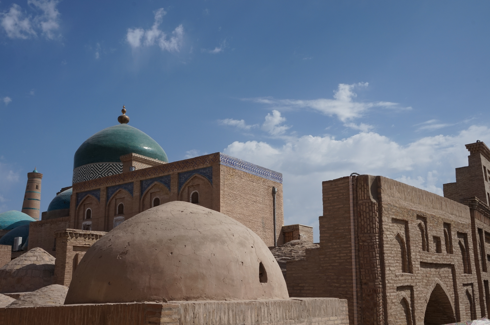

TOURS
CLASSIC 8 DAY TOUR TO EXPLORE UZBEKISTAN
Itinerary: Urgench – Khiva – Bukhara– Shakhrisabz– Samarkand – Tashkent
Duration: 8 days/ 7.5 nights
DAY – 1: ISTANBUL – URGENCH - KHIVA

Depart Istanbul by TK-262 at 01:30, arrival Urgench at 07:10. Meet by guide and transfer to hotel. Breakfast at hotel and free time for leisure then start sight seeing of Khiva: Khiva – is an old place. Its historic heart like those of other Central Asian cities, is preserved in its entirety – but so well preserved that the life has almost been squeezed out of it. Khiva consist of two parts: Ichan Kala ( inside town) and Dishan Kala ( outside town) ancient city museum on the open sky and start of sightseeing: Kunya Ark Citadel Kunya Ark which is the “old fortress” was founded in 1680's by Muhammad Arang Khan. It is a citadel located in Itchan Kala. The citadel presented a complex containing the residence of Khivan Khans and their family. The Kunya Ark foundations are the oldest surviving remains in Khiva dating back to the fifth century. Palace of Nurullah-bai- It was built by Muhammad-Rahim-khan II for his son and heir Asfendiyar-khan from 1906-1912. The Tash Hauli Palace in Khiva was built in the 1830s, as a royal residence by prominent Khivan ruler Allah Kuli Khan (1826-42). Tash Hauli Palace is located within the walls of Ichan-Kala or Inner Fortress. The name of Tash Hauli translates to ‘stone house’, demonstrating an urban interpretation of the traditional, stronghold-like country houses in Khorezm known as “hauli”. Palvan-Darvaza means not only the eastern gates of Ichan-Qala, but also a big shopping mall. In the 17th-18th centuries this place was occupied by the ancient gates with a prison. Madrassah of Muhammad Rahim KhanThe madrassah of Muhammad Rahim-khan is located opposite the gates of Kunya-Ark. The madrassah is one of the biggest in Khiva. It was constructed in 1876. Madrassah of Muhammad Amin KhanThe biggest medieval madrassah in Khiva, the Madrassah of Muhammad Amin-khan (1845-1855) is located opposite to Kunya-Ark at the gates of Ata-darvaza. Madrassah of Kutlug-Murad-inak and Abdullah-khan Madrassah of Khurdjum and Allakuli Khan. Madrassah of Arab Khan and Muhammad Amin Inak. Madrassah of Amir Tura. The madrassah of Amir Tura is located in the northern part of Ichan-Qala among private houses. It was constructed in 1870 by the brother of Muhammad Rahim-khan II. Kunya-Ark (“Old fortress”) is the inner citadel of Ichan-Qala. It was founded in the 17th century by Muhammad-Erenk Khan (1687-1688). Kunya-Ark had formed a “city inside a city” separated by a high wall, by the end of the 18th century. There were the Khan’s mosque, residence, supreme court, reception (kurinysh-khan), powder mill, arsenal, mint, registry, harem, kitchens, stables, guardhouse and other structures. Kalta-Minor - the "Short minaret". The minaret and Muhammad Amin-khan Madrassah were intended to finish the plan of the big square near the western gates of Ichan-Qala. Minaret and Madrassah of Islam KhodjaDescription About Welcome to in Khiva. Here you will find information, view photos and read tourist reviews of in Khiva. Islam-Khodja was the first vizier of the Khiva khanate of Muhammad Rahim-khan II (1863-1910) and his son Esfendiyar-khan (1910-1920). Friday Mosque – Djuma Mosque and Minaret. The cathedral mosque of Khiva, otherwise known as Djuma-Mosque, is located in Ichan-Qala on the road leading from the gates of Palvan-darva-za to Ata-darvaza. Overnight at hotel. Meals: B&B
DAY-2: KHIVA – BUKHARA

A.M. Breakfast in hotel. After breakfast drive to Bukhara via Kyzyl Kum desert. For centuries it marked the northern limits of Transoxiana and the edge of the boundless nomadic steppe. You will see Amu Darya one of the two second river of Central Asia separating the Kyzyl Kum from the Kara Kum of Tukrmenistan. P.M. Lunch picknick en road. Continue driving. Arrival and accommodation at hotel. Free time for leisure in Bukhara city! Overnight at hotel. Meals: B&B
DAY-3: BUKHARA

A.M. Breakfast in hotel. Bukhara – this is one of the best places in Central Asia which was as capital of Samanid state in the 9th and 10th centuries that called “Bukhoro-i Sharif” Boasting a different mosque for every day of the year, drawing the finest minds of the East with its cultural and commercial vitality, the city well deserved the title "Bukhara the Holy. ARK Fortress (VI – XIX c) – in middle ages it was a whole town with the emirs house, with wives, mosques mint place, government institutes, store rooms, a prison and a square for public executions: Bolo Khauz Mosque (1712) Mosque Near the Pool. Samanid’s mausoleum (IX – X c) – it was the first building in Central Asia constructed from backed bricks in the shape of a cube covered by a dome with unrepeatable geometrical brickwork design – a masterpiece of world architecture Chashma Ayub Mausoleum – the original construction dates from the 12th century rule of Karakhanid Arslan Khan, the earliest surviving dome was raised by Amir Temur in 1380 over the existing tomb chamber. Poikalon (XII – XVI c) architectural ensemble in the center of old Bukhara – includes the cathedral mosque “Masjidi Kalon”, “Miri Arab” madrasah and the highest minaret (46 m) at that time in the Orient. Ulugbek Madrassah 1417 was the earliest of three commissioned by the enlightened Timutid ruler (the other two stand in Samarkand and Gijduvan) and his secular influence dominates the exterior design of the religious college. Abdul Aziz Khan Madrassah (1652), glittering in mercifully unrestored 17th century glory P.M. In the afternoon continue of city tour in Bukhara incl: Tim Abdullakhan was built in 1577 and was one of the most elegant trade halls in Bukhara where silk and wool was sold by Afghan trades. Trading Domes consists of three trading centers: Tok-i-Zargaron (1570) – Jeweler’s Bazaar, Tok-i-Tilpak Furushon – Cap Maker’s Bazaar, Tok-i-Sarrafon – Moneychanger’s Bazaar. Magoki Attori – in 937 the four-pillared mosque was burn the ground in a city-wide fire and in the 12th century the present mosque was erected, from which the focus of the mosque, the original southern portal remains. Laby Khauz complexe . Folklore show at Madrassah Nodir Dewon Begi. Overnight at hotel. Meals: B&B
DAY-4: BUKHARA – SHAKHRISABZ –SAMARKAND

A.M. Breakfast in hotel. Drive to Samarkand via Shakhrisabz. Route to Shahrisabz city (birth place of Amir Timur) Sight seeing and excursion in Shahrisabz: Ak Saray (white Palace) – Timur’s summer palace. Kuk Gumbaz Mosque and Dorut Tilovat Complex – (1437) this big Friday Mosque was built by Ulugbek in honour of his father Shakhrukh Gumbazi Seydon – (Dome of Sseyids) finished by Ulugbek in 1438 as a mausoleum for his own descendants. Dorus Saodat Complex – The complex was built in 1392 by Timur and means the seat of power and might. Hazrat Imam Mosque of 14 century P.M. Continue route to Samarkand. Arrival and accommodation at hotel. Overnight at hotel. Meals: B&B
DAY-5: SAMARKAND
A.M. Breakfast in hotel. Samarkand - the Eden of ancient East, the most precious pearl in the Islamic world. Samarkand - called Marakanda in the 4th century BC, whoever tried to conquer it! During the centuries the city has been invaded by troops of Alexander the Great, Arabian invaders, Chingiz Khan and Tamerlane. During so many passed years Samarkand enticed great men of his time and still attracts with its beauty, architecture, history and tales. Start full day sightseeing in Samarkand: A. Temur’s Mausoleum – Gur Emir (XV c) Timurids dynastic burial vault. A unique monument of arhitecture with blue ribbed teessellated dome. Registan Square (XV–XVIIc) official center of Timur Empire, cosist of grandious madrasahs of Ulugbek, Sher Dor & Tillya Kari , Bibi Khanym mosque – (XIVc) the unrepeatable beauty Mosque constructed by Timur for his wife. P.M. Oriental Bazaar “Siab” – oldest bazaar of Samarkand were Caravans of Silk Road has stop for trade. Shahi Zinda mausoleum (XIV–XV c) ‘Town of Dead’ a complex of more than 20 unique buildings of different ages. Ulugbek’s Observatory (XV c) 1st observatory in orient with 30m sextant built by Ulugbek to make exact astronomical catalogue. Overnight at hotel. Meals: B&B
DAY-6: SAMARKAND – TASHKENT

A.M. Breakfast in hotel. Continue sight seeing of Samarkand: The Mausoleum of Saint Daniel’s – (XIV-XVc) the biblical prophet Saint Daniel and it was his remains that found rest here according to legend. The Mausoleum attracts a lot of nations and pilgrims with different religion from all over the world. The “Museum of Afrasiyob” - the museum build next to the ruins of old city “Afrasiyob” (the name of city) were you can compare with presented exponents in museum and ruins of “Afrasiyab” city history and life. P.M. Continue sightseeing of Samarkand and visit for “Meros” – paper production mills; Thanks to efforts the ancient paper production tradition by old technologies was restored. It is an interesting fact, that the whole production is carried out manually and every guest may watch the paper production process. Silk waste, mulberry bark and bamboo sprouts (may be replaced by wooden sticks) are used as a raw material. Then we will visit “Hudjum” handmade silk carpets producing factory: the process of carpets manufacturing can be observed directly to see the unique patterns of carpets. Mostly young girls or females are employed, they create amazing carpets of the most vivid and varied colors. Here one can see items with ancient ornaments, made according to the secret technologies passed from generation to generation. Transfer to train station and take high speed train to Tashkent, depart at 17:00 and arrival at 19:10 Meet by vehicle and transfer to hotel. Overnight at hotel. Meals: B&B
DAY-7: TASHKENT

A.M. Breakfast at hotel. Start sight seeing of Tashkent – the capital of Republic of Uzbekistan: Khasti Imam Complex - the complex consists from the “Barakhan Madrassah”, “Tilla Sheykh” Mosque, “Muyi Muborak” Medresse, “Kaffal Shashi” Mausoleum, “Namozgoh” Mosque and Museum of “Quran” were the second biggest Ottoman’s Quran presented. Continue our route in Museum of Applied Arts of Uzbekistan for excursion. P.M. Excursion to Museum of History of Uzbekistan and Independence square, Monument for Amir Timur. Overnight at hotel. Meals: B&B
DAY-8: TASHKENT – ISTANBUL
Transfer to airport at 00:15, flight to Istanbul by TK-371 at 02:45
Tour cost in USD and valid from 15 of March 2023 up to 15 of November 2023
999
USD
PER PERSON
Tour cost includes:
1. Accommodations in twin /double room basis
2. All land transportation by air-conditioned bus
3. English, German, Spanish, French speaking tour escorted guides
services
4. Excursion and entrance fees to historical monuments as per
itinerary
5. Meals: B&B basis
6. Invitation for visa or visa support letter for Uzbekistan if
required
7. Refreshments such as: mineral water 0.5l per day per person
8. High speed train “Afrasiab” ticket for the economy class 1 way
9. Folklore show during the dinnertime in Nadir Devan Begi Madrassah
in Bukhara
Tour Cost do not includes:
1. International air-fares
2. Half board supplement 84$; Full board supplement 154$
3. Single supplement
4. Visa fees
5. Photo and camera charges in monuments
6. Travel Insurance
7. Tips for guide and Drivers
1. International air-fares
2. Half board supplement 84$; Full board supplement 154$
3. Single supplement
4. Visa fees
5. Photo and camera charges in monuments
6. Travel Insurance
7. Tips for guide and Drivers